Chicken rice bowl with spinach, drawn twice on 30 October 2026: Gemini with the first prompts, ChatGPT with corrected prompts for steps 1, 4 and 5. Below: what we learned, the prompts to use now, what each picture must show, and the verdict on every picture.
Lessons learned
One chat per recipe. The model then keeps the same counter, pan, pot and light, and the pictures read as one series.
The setup message asks for no picture. Otherwise the model draws one anyway, with foods we never named.
Describe the step the way a real cook does it. "Rinse over a bowl" gave water falling onto the counter; nobody rinses rice like that. At the sink, under the tap.
Say where every earlier food is now. The rice cooks in the pot from step 1 on; without that line, ChatGPT left it raw in the sieve for three steps.
Say the state that matters for safety, in plain words. "Golden on the underside" gave raw-looking chicken; "fully cooked, no pink anywhere" gave cooked chicken.
Say amounts as something you can see. 80 g rice is a thin layer, less than half a cup; both models drew far more.
Check every picture against its step before it is kept, one by one. About one picture in six was wrong in each set.
Label drawn pictures: Beta, drawn by AI. They show the idea of a step; the words and amounts are what count.
The setup message
I will ask you for 6 photos, one per cooking step of one recipe: chicken rice bowl with spinach. They are one series: the same home kitchen, the same light grey stone counter and sink, the same window light from the left, the same black frying pan, small steel pot with a glass lid, white bowl and wooden board in every photo. Realistic phone photo from above at about 45 degrees. Hands may show, no faces. No text, no logos, no labels. Square. Only the foods I name are in the picture. Each food looks exactly as it is at that step: raw stays raw, cooked is cooked through. Do not draw anything yet. Reply only "Ready".
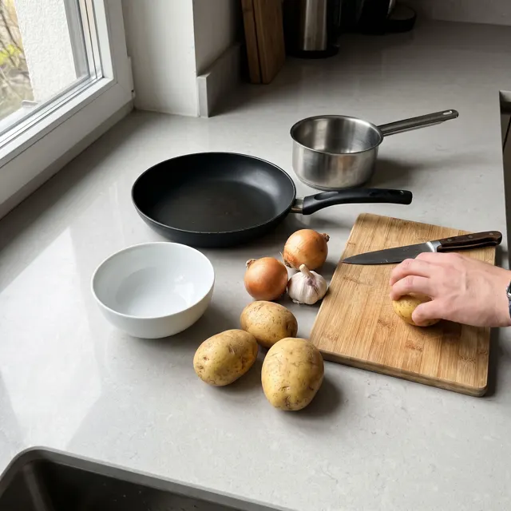
Gemini · setup, first promptRejectedDrawn although the message only set the scene. Potatoes and onions are not in the recipe.
STEP 1 OF 6
Rinse 80 g rice and bring it to the boil in 200 ml water. Cover and cook on low heat for 12 minutes.
Prompt
Photo 1 of 6: rinsing 80 g dry basmati rice at the sink: the fine sieve held under the running tap, only a thin layer of rice on the bottom of the sieve (80 g is less than half a cup), the water running clear into the sink. The small steel pot with water stands on the counter beside the sink.
Must show
At the sink, under the tap
A thin layer of rice, under half a cup
No other foods
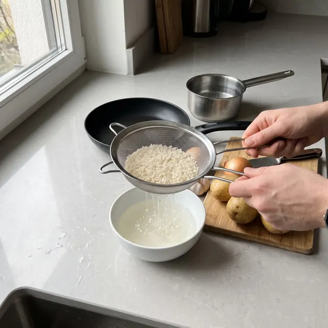
Gemini · first promptFixRinsed over a bowl on the counter, as the first prompt asked. More than 80 g.
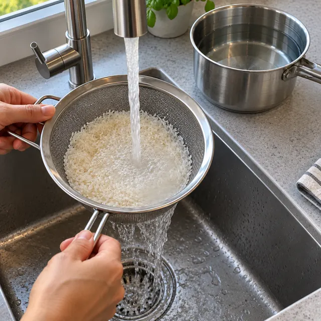
ChatGPT · corrected promptFix amountReal: sink, tap, drain. About 200 g of rice, not 80 g.
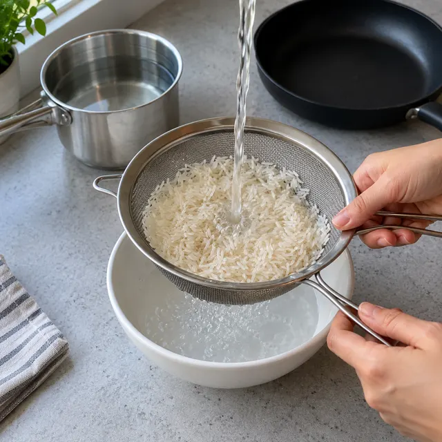
ChatGPT · first promptRejectedWater falls from nowhere onto the counter. No one rinses rice this way.
STEP 2 OF 6
Cut 160 g chicken breast into strips. Season with salt and pepper.
Prompt
Photo 2 of 6: 160 g raw chicken breast, pale pink, cut into finger-thick strips on the wooden board, salt and black pepper on top. The rice is cooking: the small steel pot stands on the hob with the glass lid on, steam on the lid. No raw rice anywhere.
Must show
Raw chicken looks raw
The rice cooks in the pot, lid on
No raw rice anywhere
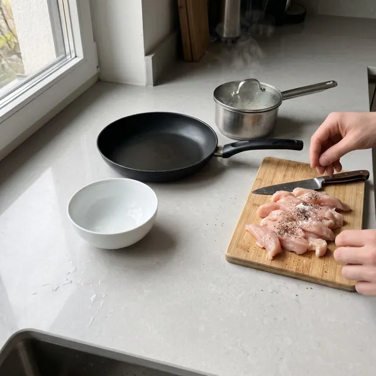
GeminiPassRaw chicken, seasoned. The pot steams with its lid on.
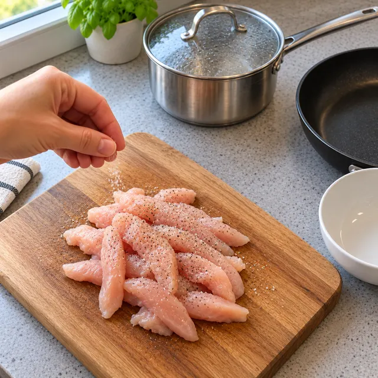
ChatGPTPassRaw chicken, seasoned. Pot with lid and steam.
STEP 3 OF 6
Slice 6 g garlic thin.
Prompt
Photo 3 of 6: two garlic cloves (6 g) sliced thin on the wooden board, a small knife beside them. The raw seasoned chicken strips wait on a plate. The rice pot cooks on the hob with the lid on. No raw rice anywhere.
Must show
About two cloves, sliced thin
The rice still cooks in the pot
No raw rice anywhere
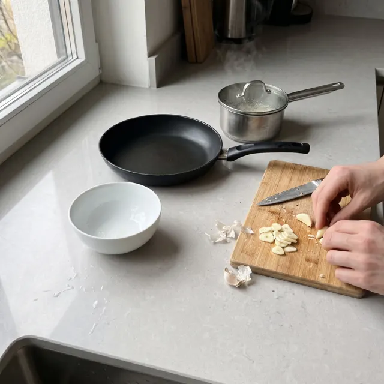
GeminiPassThin slices, about two cloves. Pot cooking.
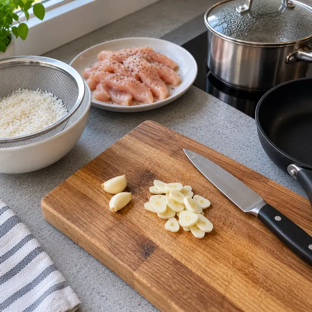
ChatGPTFixThe garlic is right. The rice still sits raw in the sieve; it should be cooking since step 1.
STEP 4 OF 6
Heat 8 g olive oil in a pan on medium high heat. Fry the chicken 6 minutes, turning once, until no pink is left inside.
Prompt
Photo 4 of 6: the chicken strips frying in the black pan with a little olive oil, already turned once: every strip golden brown on the side facing up. Tongs in hand. The rice pot cooks on the hob with the lid on. No raw rice anywhere.
Must show
Every strip golden on the side facing up
A little oil, not a pool
The rice still cooks in the pot
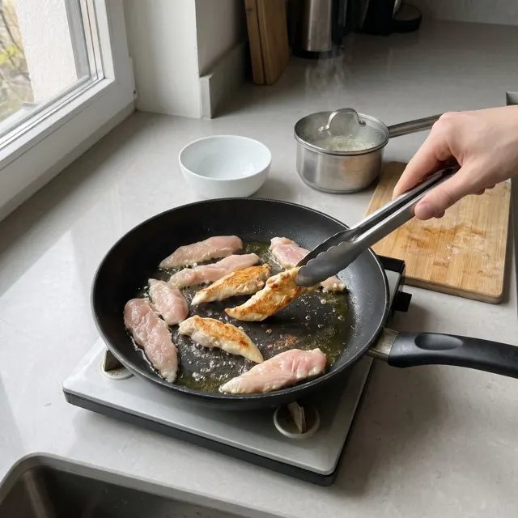
Gemini · first promptFixMost strips still look raw, as the first prompt asked ("pale on top"). Reads as uncooked.
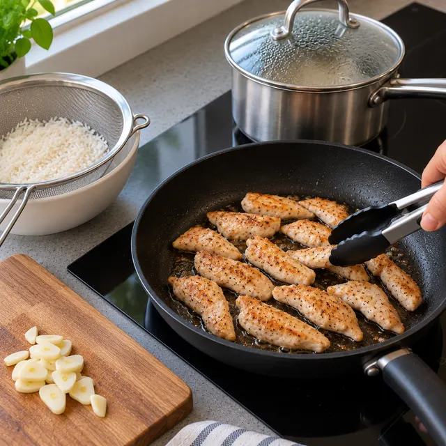
ChatGPT · corrected promptFixThe chicken is right. The rice is still raw in the sieve.
STEP 5 OF 6
Add 120 g spinach and the garlic. Stir 2 minutes, until the spinach wilts.
Prompt
Photo 5 of 6: the chicken is fully cooked: every strip golden brown on all sides, white inside, no pink anywhere. A big handful of fresh spinach (120 g) and the garlic slices just added, half of the spinach already wilted. The rice pot on the hob, lid on. No raw rice anywhere.
Must show
No pink chicken anywhere
Spinach half wilted, garlic in the pan
The rice still cooks in the pot
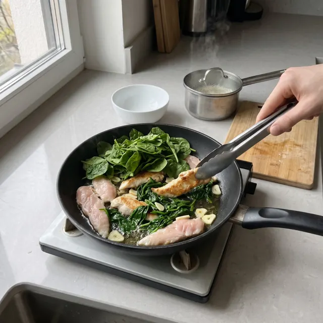
Gemini · first promptFailSeveral strips are raw pink after the frying step. A food safety error.
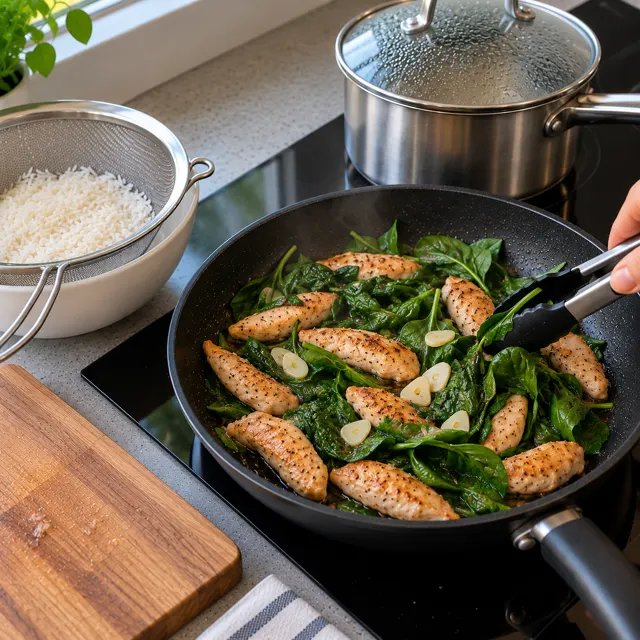
ChatGPT · corrected promptFixChicken cooked through, spinach and garlic in. The rice is still raw in the sieve.
STEP 6 OF 6
Put the rice in a bowl and the chicken and spinach on top.
Prompt
Photo 6 of 6: the finished bowl: cooked, fluffy white rice in the white bowl, the chicken strips and the wilted spinach with garlic on top. The empty pan and the rice pot in the back.
Must show
Cooked rice, chicken and spinach only
A portion that fits 80 g rice and 160 g chicken
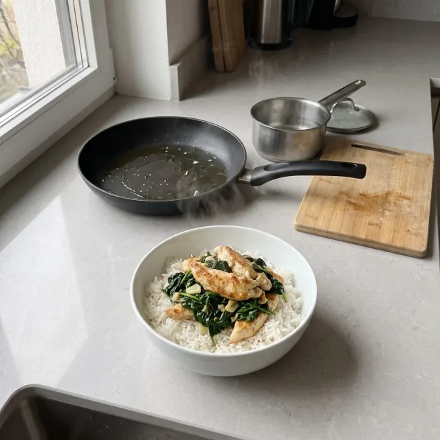
GeminiPassThe finished bowl, cooked through.
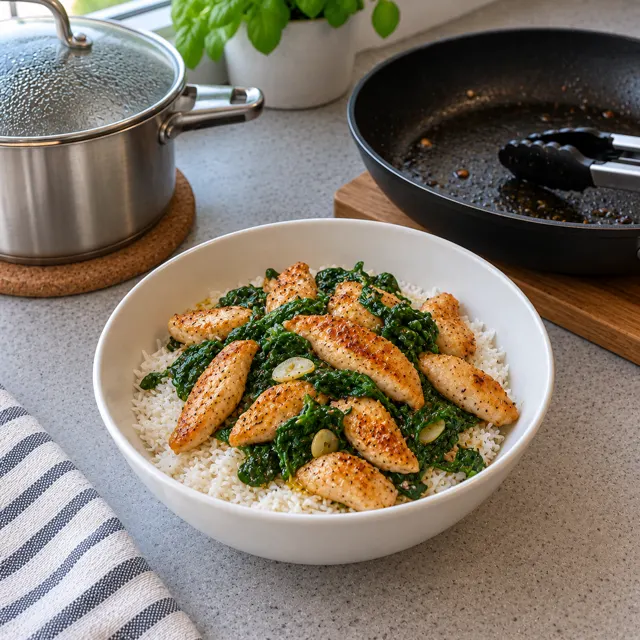
ChatGPTPassCooked through. The spinach looks more like kale.
Before a picture is kept
Does it show this step, and only this step?
Is every food in the recipe, and every food of the recipe where it should be by now?
Is meat raw before cooking and cooked through after it?
Do the amounts look like the grams in the step?
Would a real cook do it this way?
Is it the same kitchen, pan and pot as the other steps?
A picture that fails one question is drawn again with that line added to its prompt. Prices for a drawn picture: about 3 cents each at 1K with gemini-3.1-flash-lite-image, Google's paid price.